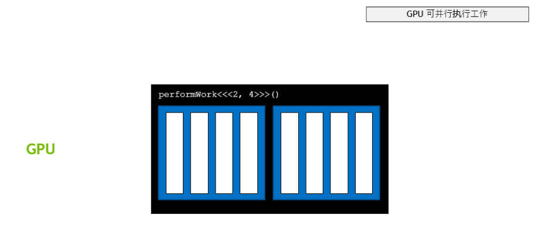
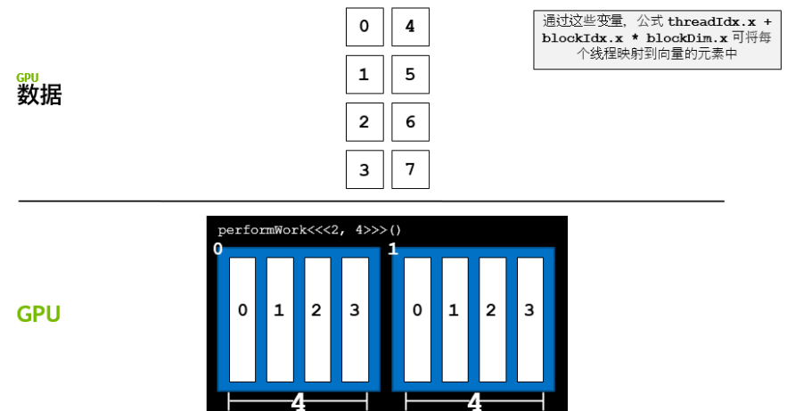
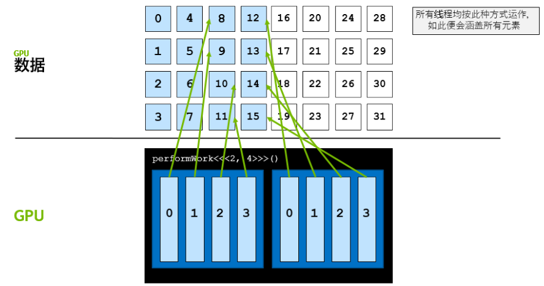
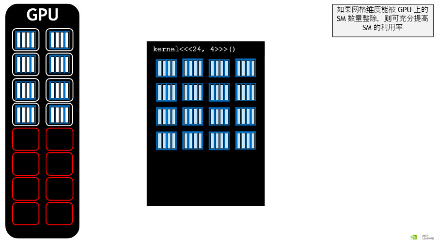
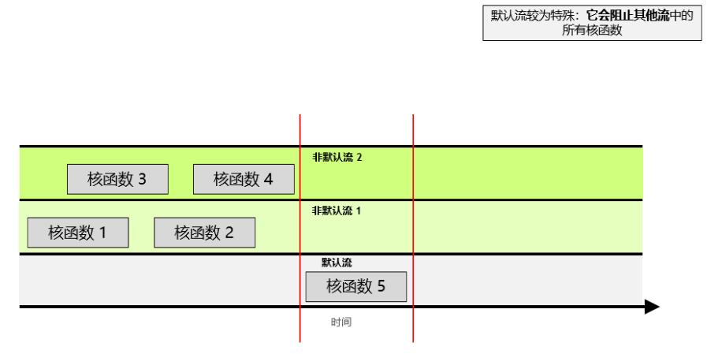

Lec.06 CUDA C 编程基础
约 3364 个字 • 572 行代码 • 预计阅读时间 16 分钟
Part 1. Graphics Processing Units¶
Roadmap¶
- ^ Many-core (GPU)
- ^ Inter-core Parallelism
- ^ Parallelism
- ^ Pipeline CPU
- ^ Multi-Cycle CPU
- ^ Single-Cycle CPU
- ^ Von Newmann Architecture
Von Newmann Model¶
- Stored program
- 指令和数据存储在统一的内存中
- Sequential instruction processing
- 单线程
- Program counter (instruction pointer) 决定了当前执行的指令
Single-Cycle Microarchitecture¶
flowchart TD
A[Combinational Logic] -->|AS'| B["Sequential Logic (state)"]
B -->|AS| A- AS := Architectural state at the beginning of a clock cycle
- AS' := ~ at the end fo a clock cycle
Multi-Cycle Microarchitecture¶
- Idea
- 缩短周期
- 每条指令执行多个周期
- ISA 决定了次态，对于 ISA 来说，没有中间状态
- 微架构实现了状态转换
- single-cycle: AS --> AS'
- multi-cycle: AS --> AS+MS1 --> AS+MS2 --> AS'
Pipeline CPU¶
- Key idea: process other instructions on idle resources
- 将每个指令分成多个 stage，每个阶段执行不同的指令
Why GPU?¶
Programming Model: CPU and GPU¶
flowchart TD
A["Serial Code (CPU)"] --> B["Parallel Kernel (GPU)"]
B --> C["Serial Code (CPU)"]
C --> D["Parallel Kernal (GPU)"]Programming Model vs. Hardware Execution Model¶
- Programming Model: threads
- sequential, SIMD, dataflow, MIMD, SPMD
- Hardware Execution Model: cores
- out-of-order execution, vector processor, array processor, dataflow processor, multithreaded processor
A GPU is a SIMD (SIMT) Machine¶
- Except it is not programmed using SIMD instructions
- It is programmed using threads (SPMD programming model)
- 每个线程对不同的数据执行相同的操作
- 每个线程可以被独立执行控制
Programming Model¶
SISD vs. SIMD vs. SPMD¶
Sequential SISD¶
Data Parallel SIMD¶
Multithreaded SPMD (Single Program Multiple Data)¶
- Each iteration is independent
- 每个迭代（循环）都生成一个线程，每个线程都做相同的操作
GPU Programming Example¶
CUDA/OpenCL Programming Model¶
- SPMD, e.g. CUDA
- Hardware
- Thread Grid: the whole set of threads
- Thread Block
- 是一种编程抽象，表示一组可以并行执行的线程
- 一个 block 中共享内存，且时序同步
- Thread: corresponds to an iteration

CUDA Programming Language¶
// Memory allocation
cudaMalloc((void**)&d_in, #bytes);
// Memory copy
cudaMemcpy(d_in, h_in, #bytes, cudaMemcpyHostToDevice);
// Kernel launch
kernel<<< #blocks, #threads >>>(args);
// Memory deallocation
cudaFree(d_in);
// Explicit synchronizaiton
cudaDeviceSynchronize();
CUDA example: vector addition¶
void vecadd(float* A, float* B, float* C, int N) {
// 1. allocate GPU memory
float* A_d, B_d, C_d;
cudaMalloc((void**) &A_d, N*sizeof(float));
cudaMalloc((void**) &B_d, N*sizeof(float));
cudaMalloc((void**) &C_d, N*sizeof(float));
// 2. copy data to GPU memory
cudaMemcpy(A_d, A, N*sizeof(float), cudaMemcpyHostToDevice);
cudaMemcpy(B_d, B, N*sizeof(float), cudaMemcpyHostToDevice);
// 3. perform computation on GPU
const unsigned int numThreadsPerBlock = 512;
const unsigned int numBlocks = N/numThreadsPerBlock;
vecadd_kernel<<<numBlocks, numThreadsPerBlock>>>(A_d, B_d, C_d, N);
// 4. copy data from GPU memory
cudaMemcpy(C, C_d, N*sizeof(float), cudaMemcpyDeviceToHost)
// 5. Deallocate GPU memory
cudaFree(A_d);
cudaFree(B_d);
cudaFree(C_d);
}
Kernel code¶
__global__ void vecadd_kernel(float* A, float* B, float* C, int N) {
int i = blockDim.x * blockIdx.x + threadIdx.x;
if(i < N){
c[i] = A[i] + B[i];
}
}
CUDA example: matrix multiplication¶
__globall__ add_matrix(float* a, float* b, float* c, int N){
int i = blockIdx.x * blockDim.x + threadIdx.x;
int j = blockIdx * blockDim.y + threadIdx.y;
int index = i + j * N;
if(i < N && j < N){
c[index] = a[index] + b[index];
}
}
int main(void){
dim3 dimBlock(blocksize, blocksize);
dim3 dimGrid(N / dimBlock.x, N / dimBlock.y);
add_matrix<<<dimGrid, dimBlock>>>(a, b, c, N);
}
SIMT (Hardware) & Warp (Software)¶
- SIMT: Single Instruction Multiple Thread
- 16 CUDA cores in a SM are executed in a lock step
- Warp:
- A warp, a basic execution unit, consists of 32 consecutive threads
- A thread block is divided into warps for SIMT execution
Part 2. CUDA C 编程基础¶
使用 CUDA C/C++ 加速应用程序¶
Intro¶
获取系统中可用的 GPU 资源：
一个加速程序 .cu 样例：
void CPUFunction()
{
printf("This function is defined to run on the CPU.\n");
}
__global__ void GPUFunction()
{
printf("This function is defined to run on the GPU.\n");
}
int main()
{
CPUFunction();
GPUFunction<<<1/* # of thread blocks */, 1/* # of threads per block*/>>>();
cudaDeviceSynchronize(); // 同步 GPU 和 CPU 的工作
}
加速计算中的一些术语
__global__ void GPUFunction()
__global__关键字表明以下函数将在 GPU 上运行并可全局调用，而在此种情况下，则指由 CPU 或 GPU 调用。- 通常，我们将在 CPU 上执行的代码称为主机代码，而将在 GPU 上运行的代码称为设备代码。
- 注意返回类型为
void。使用__global__关键字定义的函数需要返回void类型。
GPUFunction<<<1, 1>>>();
- 通常，当调用要在 GPU 上运行的函数时，我们将此种函数称为已启动的核函数。
- 启动核函数时，我们必须提供执行配置，即在向核函数传递任何预期参数之前使用
<<< ... >>>语法完成的配置。 - 在宏观层面，程序员可通过执行配置为核函数启动指定线程层次结构，从而定义线程组（称为线程块）的数量，以及要在每个线程块中执行的线程数量。稍后将在本实验深入探讨执行配置，但现在请注意正在使用包含
1线程（第二个配置参数）的1线程块（第一个执行配置参数）启动核函数。
cudaDeviceSynchronize();
- 与许多 C/C++ 代码不同，核函数启动方式为异步：CPU 代码将继续执行_而无需等待核函数完成启动_。
- 调用 CUDA 运行时提供的函数
cudaDeviceSynchronize将导致主机 (CPU) 代码暂作等待，直至设备 (GPU) 代码执行完成，才能在 CPU 上恢复执行。
编译命令：
CUDA 的线程层次结构¶

- Grid：核函数（GPU函数）启动关联的块
- Block：线程块
- Thread：线程，每个网格中有相同的线程数
启动并行运行的核函数
程序员可通过执行配置指定有关如何启动核函数以在多个 GPU 线程中并行运行的详细信息。更准确地说，程序员可通过执行配置指定线程组（称为线程块或简称为块）数量以及其希望每个线程块所包含的线程数量。执行配置的语法如下：
<<< NUMBER_OF_BLOCKS, NUMBER_OF_THREADS_PER_BLOCK>>>
启动核函数时，核函数代码由每个已配置的线程块中的每个线程执行。
因此，如果假设已定义一个名为 someKernel 的核函数，则下列情况为真：
someKernel<<<1, 1>>()配置为在具有单线程的单个线程块中运行后，将只运行一次。someKernel<<<1, 10>>()配置为在具有 10 线程的单个线程块中运行后，将运行 10 次。someKernel<<<10, 1>>()配置为在 10 个线程块（每个均具有单线程）中运行后，将运行 10 次。someKernel<<<10, 10>>()配置为在 10 个线程块（每个均具有 10 线程）中运行后，将运行 100 次。
线程和块的索引
每个线程在其线程块内部均会被分配一个索引，从 0 开始。此外，每个线程块也会被分配一个索引，并从 0 开始。正如线程组成线程块，线程块又会组成网格，而网格是 CUDA 线程层次结构中级别最高的实体。简言之，CUDA 核函数在由一个或多个线程块组成的网格中执行，且每个线程块中均包含相同数量的一个或多个线程。
CUDA 核函数可以访问能够识别如下两种索引的特殊变量：正在执行核函数的线程（位于线程块内）索引和线程所在的线程块（位于网格内）索引。这两种变量分别为 threadIdx.x 和 blockIdx.x。
练习：线程和块的索引
加速 for 循环¶
单个 for 循环的加速¶
练习：使用单个线程加速 for 循环
顺序问题
当 thread 很大时，就会发现线程的执行结束顺序是不确定的。
协调并行线程¶

可以通过使用 CUDA 提供的索引变量进行数据的分块。
调整线程块的大小以实现更多的并行化
线程块包含的线程具有数量限制：确切地说是 1024 个。为增加加速应用程序中的并行量，我们必须要能在多个线程块之间进行协调。
CUDA 核函数可以访问给出块中线程数的特殊变量：blockDim.x。通过将此变量与 blockIdx.x 和 threadIdx.x 变量结合使用，并借助惯用表达式 threadIdx.x + blockIdx.x * blockDim.x 在包含多个线程的多个线程块之间组织并行执行，并行性将得以提升。以下是详细示例。
执行配置 <<<10, 10>>> 将启动共计拥有 100 个线程的网格，这些线程均包含在由 10 个线程组成的 10 个线程块中。因此，我们希望每个线程（0 至 99 之间）都能计算该线程的某个唯一索引。
- 如果线程块
blockIdx.x等于0，则blockIdx.x * blockDim.x为0。向0添加可能的threadIdx.x值（0至9），之后便可在包含 100 个线程的网格内生成索引0至9。 - 如果线程块
blockIdx.x等于1，则blockIdx.x * blockDim.x为10。向10添加可能的threadIdx.x值（0至9），之后便可在包含 100 个线程的网格内生成索引10至19。 - 如果线程块
blockIdx.x等于5，则blockIdx.x * blockDim.x为50。向50添加可能的threadIdx.x值（0至9），之后便可在包含 100 个线程的网格内生成索引50至59。 - 如果线程块
blockIdx.x等于9，则blockIdx.x * blockDim.x为90。向90添加可能的threadIdx.x值（0至9），之后便可在包含 100 个线程的网格内生成索引90至99。
练习：加速具有多个线程块的For循环
GPU 内存分配¶
Warning
GPU 无法直接访问 CPU 内存
以下是使用 CUDA 分配内存的样例：
int N = 2<<20;
size_t size = N * sizeof(int);
int *a;
// Note the address of `a` is passed as first argument.
cudaMallocManaged(&a, size);
// Use `a` on the CPU and/or on any GPU in the accelerated system.
cudaFree(a);
练习：主机和设备上的数组操作
#include <stdio.h>
void init(int *a, int N)
{
int i;
for (i = 0; i < N; ++i)
{
a[i] = i;
}
}
__global__ void doubleElements(int *a, int N)
{
int i;
i = blockIdx.x * blockDim.x + threadIdx.x;
if (i < N)
{
a[i] *= 2;
}
}
bool checkElementsAreDoubled(int *a, int N)
{
int i;
for (i = 0; i < N; ++i)
{
if (a[i] != i*2) return false;
}
return true;
}
int main()
{
int N = 100;
int *a;
size_t size = N * sizeof(int);
cudaMallocManaged(&a, size);
init(a, N);
size_t threads_per_block = 10;
size_t number_of_blocks = 10;
doubleElements<<<number_of_blocks, threads_per_block>>>(a, N);
cudaDeviceSynchronize();
bool areDoubled = checkElementsAreDoubled(a, N);
printf("All elements were doubled? %s\n", areDoubled ? "TRUE" : "FALSE");
cudaFree(a);
}
解决不匹配问题¶
如何处理块配置与所需线程数不匹配¶
练习：使用不匹配的执行配置来加速For循环
#include <stdio.h>
__global__ void initializeElementsTo(int initialValue, int *a, int N)
{
int i = threadIdx.x + blockIdx.x * blockDim.x;
if(i < N) a[i] = initialValue; // Problem solver
}
int main()
{
int N = 1000;
int *a;
size_t size = N * sizeof(int);
cudaMallocManaged(&a, size);
size_t threads_per_block = 256;
size_t number_of_blocks = 4;
int initialValue = 6;
initializeElementsTo<<<number_of_blocks, threads_per_block>>>(initialValue, a, N);
cudaDeviceSynchronize();
for (int i = 0; i < N; ++i)
{
if(a[i] != initialValue)
{
printf("FAILURE: target value: %d\t a[%d]: %d\n", initialValue, i, a[i]);
exit(1);
}
}
printf("SUCCESS!\n");
cudaFree(a);
}
数据集比网格大¶

使用 gridDim.x 实现跨网格循环
CUDA 提供一个可给出网格中线程块数的特殊变量：gridDim.x。然后计算网格中的总线程数，即网格中的线程块数乘以每个线程块中的线程数：gridDim.x * blockDim.x。带着这样的想法来看看以下核函数中网格跨度循环的详细示例：
练习：使用跨网格循环来处理比网格更大的数组
#include <stdio.h>
void init(int *a, int N)
{
int i;
for (i = 0; i < N; ++i)
{
a[i] = i;
}
}
__global__
void doubleElements(int *a, int N)
{
int idx = blockIdx.x * blockDim.x + threadIdx.x;
int stride = gridDim.x * blockDim.x;
for (int i = idx; i < N; i += stride)
{
a[i] *= 2;
}
}
bool checkElementsAreDoubled(int *a, int N)
{
int i;
for (i = 0; i < N; ++i)
{
if (a[i] != i*2) return false;
}
return true;
}
int main()
{
int N = 10000;
int *a;
size_t size = N * sizeof(int);
cudaMallocManaged(&a, size);
init(a, N);
size_t threads_per_block = 256;
size_t number_of_blocks = 32;
doubleElements<<<number_of_blocks, threads_per_block>>>(a, N);
cudaDeviceSynchronize();
bool areDoubled = checkElementsAreDoubled(a, N);
printf("All elements were doubled? %s\n", areDoubled ? "TRUE" : "FALSE");
cudaFree(a);
}
错误处理¶
基于 cudaError_t 类型的错误处理
与在任何应用程序中一样，加速 CUDA 代码中的错误处理同样至关重要。即便不是大多数，也有许多 CUDA 函数（例如，内存管理函数）会返回类型为 cudaError_t 的值，该值可用于检查调用函数时是否发生错误。以下是对调用 cudaMallocManaged 函数执行错误处理的示例：
cudaError_t err;
err = cudaMallocManaged(&a, N) // Assume the existence of `a` and `N`.
if (err != cudaSuccess) // `cudaSuccess` is provided by CUDA.
{
printf("Error: %s\n", cudaGetErrorString(err)); // `cudaGetErrorString` is provided by CUDA.
}
启动定义为返回 void 的核函数后，将不会返回类型为 cudaError_t 的值。为检查启动核函数时是否发生错误（例如，如果启动配置错误），CUDA 提供 cudaGetLastError 函数，该函数会返回类型为 cudaError_t 的值。
/*
* This launch should cause an error, but the kernel itself
* cannot return it.
*/
someKernel<<<1, -1>>>(); // -1 is not a valid number of threads.
cudaError_t err;
err = cudaGetLastError(); // `cudaGetLastError` will return the error from above.
if (err != cudaSuccess)
{
printf("Error: %s\n", cudaGetErrorString(err));
}
最后，为捕捉异步错误（例如，在异步核函数执行期间），请务必检查后续同步 CUDA 运行时 API 调用所返回的状态（例如 cudaDeviceSynchronize）；如果之前启动的其中一个核函数失败，则将返回错误。
练习：添加错误处理
#include <stdio.h>
void init(int *a, int N)
{
int i;
for (i = 0; i < N; ++i)
{
a[i] = i;
}
}
__global__
void doubleElements(int *a, int N)
{
int idx = blockIdx.x * blockDim.x + threadIdx.x;
int stride = gridDim.x * blockDim.x;
for (int i = idx; i < N + stride; i += stride)
{
a[i] *= 2;
}
}
bool checkElementsAreDoubled(int *a, int N)
{
int i;
for (i = 0; i < N; ++i)
{
if (a[i] != i*2) return false;
}
return true;
}
int main()
{
/*
* Add error handling to this source code to learn what errors
* exist, and then correct them. Googling error messages may be
* of service if actions for resolving them are not clear to you.
*/
int N = 10000;
int *a;
size_t size = N * sizeof(int);
cudaMallocManaged(&a, size);
init(a, N);
size_t threads_per_block = 2048;
size_t number_of_blocks = 32;
cudaError_t syncErr, asyncErr;
doubleElements<<<number_of_blocks, threads_per_block>>>(a, N);
syncErr = cudaGetLastError();
asyncErr = cudaDeviceSynchronize();
if (syncErr != cudaSuccess) printf("Error: %s\n", cudaGetErrorString(syncErr));
if (asyncErr != cudaSuccess) printf("Error: %s\n", cudaGetErrorString(asyncErr));
bool areDoubled = checkElementsAreDoubled(a, N);
printf("All elements were doubled? %s\n", areDoubled ? "TRUE" : "FALSE");
cudaFree(a);
}
- 创建
cudaError_t变量 - 收集错误信息
syncErr = cudaGetLastError(); asyncErr = cudaDeviceSynchronize(); - 打印错误信息
if(syncErr != cudaSucess) printf("Error: %s\n", cudaGetErrorString(err));
CUDA 错误处理功能
创建一个包装 CUDA 函数调用的宏对于检查错误十分有用。以下是一个宏示例，您可以在余下练习中随时使用：
#include <stdio.h>
#include <assert.h>
inline cudaError_t checkCuda(cudaError_t result)
{
if (result != cudaSuccess) {
fprintf(stderr, "CUDA Runtime Error: %s\n", cudaGetErrorString(result));
assert(result == cudaSuccess);
}
return result;
}
int main()
{
/*
* The macro can be wrapped around any function returning
* a value of type `cudaError_t`.
*/
checkCuda( cudaDeviceSynchronize() )
}
查看官方文档进一步学习：CUDA Toolkit Documentation 12.5 (nvidia.com)
利用基本的 CUDA 内存管理技术来优化加速应用程序¶
性能分析¶
使用 nsys 分析应用程序
nsys profile将生成一个qdrep报告文件，该文件可以以多种方式使用。 我们在这里使用--stats = true标志表示我们希望打印输出摘要统计信息。 输出的信息有很多，包括：
- 配置文件配置详细信息
- 报告文件的生成详细信息
- CUDA API统计信息
- CUDA核函数的统计信息
- CUDA内存操作统计信息（时间和大小）
- 操作系统内核调用接口的统计信息
在本实验中，您将主要使用上面黑体字的3个部分。 在下一个实验中，您将使用生成的报告文件将其提供给Nsight Systems 进行可视化分析。
应用程序分析完毕后，请使用分析输出中显示的信息回答下列问题：
- 此应用程序中唯一调用的 CUDA 核函数的名称是什么？
- 此核函数运行了多少次？
- 此核函数的运行时间为多少？请记录下此时间：您将继续优化此应用程序，再和此时间做对比。
CUDA Kernel Statistics (nanoseconds) Time(%) Total Time Instances Average Minimum Maximum Name ------- -------------- ---------- -------------- -------------- -------------- -------------------------------------------------------------------------------- 100.0 2330194366 1 2330194366.0 2330194366 2330194366 addVectorsInto
练习：优化并分析性能
- 即通过 nsys 输出来调节核函数的启动参数
流式多处理器 (Streaming Multiprocessors)¶
- 线程块需要映射到 SM 上，一个 SM 只能处理一个线程块
- 线程块会被发射到 SM 上，这个顺序是不确定的，所以并行执行暗示了没有顺序

查询设备信息¶
以编程方式查询GPU设备属性
由于 GPU 上的 SM 数量会因所用的特定 GPU 而异，因此为支持可移植性，您不得将 SM 数量硬编码到代码库中。相反，应该以编程方式获取此信息。
以下所示为在 CUDA C/C++ 中获取 C 结构的方法，该结构包含当前处于活动状态的 GPU 设备的多个属性，其中包括设备的 SM 数量：
练习：查询设备信息
#include <stdio.h>
int main()
{
/*
* Device ID is required first to query the device.
*/
int deviceId;
cudaGetDevice(&deviceId);
cudaDeviceProp props;
cudaGetDeviceProperties(&props, deviceId);
int computeCapabilityMajor = props.major;
int computeCapabilityMinor = props.minor;
int multiProcessorCount = props.multiProcessorCount;
int warpSize = props.warpSize;
printf("Device ID: %d\nNumber of SMs: %d\nCompute Capability Major: %d\nCompute Capability Minor: %d\nWarp Size: %d\n", deviceId, multiProcessorCount, computeCapabilityMajor, computeCapabilityMinor, warpSize);
}
得到的输出为：
Device ID: 0
Number of SMs: 40
Compute Capability Major: 7
Compute Capability Minor: 5
Warp Size: 32
将网格数调整为 SM 数，可以进一步优化矢量加法。
被加速的 C/C++ 应用程序的异步流和可视化分析¶
并发 CUDA 流¶

创建，使用和销毁非默认CUDA流
以下代码段演示了如何创建，利用和销毁非默认CUDA流。您会注意到，要在非默认CUDA流中启动CUDA核函数，必须将流作为执行配置的第4个可选参数传递给该核函数。到目前为止，您仅利用了执行配置的前两个参数：
cudaStream_t stream; // CUDA流的类型为 `cudaStream_t`
cudaStreamCreate(&stream); // 注意，必须将一个指针传递给 `cudaCreateStream`
someKernel<<<number_of_blocks, threads_per_block, 0, stream>>>(); // `stream` 作为第4个EC参数传递
cudaStreamDestroy(stream); // 注意，将值（而不是指针）传递给 `cudaDestroyStream`
但值得一提的是，执行配置的第3个可选参数超出了本实验的范围。此参数允许程序员提供共享内存（当前将不涉及的高级主题）中为每个内核启动动态分配的字节数。每个块分配给共享内存的默认字节数为“0”，在本练习的其余部分中，您将传递“ 0”作为该值，以便展示我们感兴趣的第4个参数。
大作业：优化 n 体系统模拟器¶
思路¶
- 改写
bodyForce函数，使用 GPU 加速计算- 使用
__global__ - 使用
idx来映射数据块
- 使用
- 得到 SM 数量，以指导 blockNum 设置
- 使用
cudaGetDevice(&deviceID)cudaDeviceGetAttribute(&numberOfSMs, cudaDevAttrMultiProcessorCount, deviceId)
- 使用
- 进行 GPU 内存分配
cudaMallocManaged(&buf, bytes) - 预取操作
cudaMemPrefetchAsync(p, bytes, deviceId) - 使用非默认流
cudaCreateStream(&stream)
#include <math.h>
#include <stdio.h>
#include <stdlib.h>
#include "timer.h"
#include "files.h"
#define SOFTENING 1e-9f
/*
* Each body contains x, y, and z coordinate positions,
* as well as velocities in the x, y, and z directions.
*/
typedef struct { float x, y, z, vx, vy, vz; } Body;
/*
* Calculate the gravitational impact of all bodies in the system
* on all others.
*/
__global__ void bodyForce(Body *p, float dt, int n) {
int idx = threadIdx.x + blockIdx.x * blockDim.x;
int stride = blockDim.x * gridDim.x;
for (int i = idx; i < n; i += stride) {
float Fx = 0.0f; float Fy = 0.0f; float Fz = 0.0f;
for (int j = 0; j < n; j++) {
float dx = p[j].x - p[i].x;
float dy = p[j].y - p[i].y;
float dz = p[j].z - p[i].z;
float distSqr = dx*dx + dy*dy + dz*dz + SOFTENING;
float invDist = rsqrtf(distSqr);
float invDist3 = invDist * invDist * invDist;
Fx += dx * invDist3; Fy += dy * invDist3; Fz += dz * invDist3;
}
p[i].vx += dt*Fx; p[i].vy += dt*Fy; p[i].vz += dt*Fz;
}
}
int main(const int argc, const char** argv) {
int deviceId;
int numberOfSMs;
cudaGetDevice(&deviceId);
cudaDeviceGetAttribute(&numberOfSMs, cudaDevAttrMultiProcessorCount, deviceId);
// The assessment will test against both 2<11 and 2<15.
// Feel free to pass the command line argument 15 when you gernate ./nbody report files
int nBodies = 2<<11;
if (argc > 1) nBodies = 2<<atoi(argv[1]);
// The assessment will pass hidden initialized values to check for correctness.
// You should not make changes to these files, or else the assessment will not work.
const char * initialized_values;
const char * solution_values;
if (nBodies == 2<<11) {
initialized_values = "files/initialized_4096";
solution_values = "files/solution_4096";
} else { // nBodies == 2<<15
initialized_values = "files/initialized_65536";
solution_values = "files/solution_65536";
}
if (argc > 2) initialized_values = argv[2];
if (argc > 3) solution_values = argv[3];
const float dt = 0.01f; // Time step
const int nIters = 10; // Simulation iterations
int bytes = nBodies * sizeof(Body);
float *buf;
cudaMallocManaged(&buf, bytes);
Body *p = (Body*)buf;
cudaMemPrefetchAsync(p, bytes, deviceId);
read_values_from_file(initialized_values, buf, bytes);
double totalTime = 0.0;
/*
* This simulation will run for 10 cycles of time, calculating gravitational
* interaction amongst bodies, and adjusting their positions to reflect.
*/
for (int iter = 0; iter < nIters; iter++) {
StartTimer();
/*
* You will likely wish to refactor the work being done in `bodyForce`,
* and potentially the work to integrate the positions.
*/
cudaStream_t stream;
cudaStreamCreate(&stream);
int blockNum = nBodies / 512;
bodyForce<<<blockNum, 512, 0, stream>>>(p, dt, nBodies); // compute interbody forces
cudaStreamDestroy(stream);
/*
* This position integration cannot occur until this round of `bodyForce` has completed.
* Also, the next round of `bodyForce` cannot begin until the integration is complete.
*/
cudaDeviceSynchronize();
for (int i = 0 ; i < nBodies; i++) { // integrate position
p[i].x += p[i].vx*dt;
p[i].y += p[i].vy*dt;
p[i].z += p[i].vz*dt;
}
const double tElapsed = GetTimer() / 1000.0;
totalTime += tElapsed;
}
double avgTime = totalTime / (double)(nIters);
float billionsOfOpsPerSecond = 1e-9 * nBodies * nBodies / avgTime;
write_values_to_file(solution_values, buf, bytes);
// You will likely enjoy watching this value grow as you accelerate the application,
// but beware that a failure to correctly synchronize the device might result in
// unrealistically high values.
printf("%0.3f Billion Interactions / second", billionsOfOpsPerSecond);
cudaFree(buf);
}